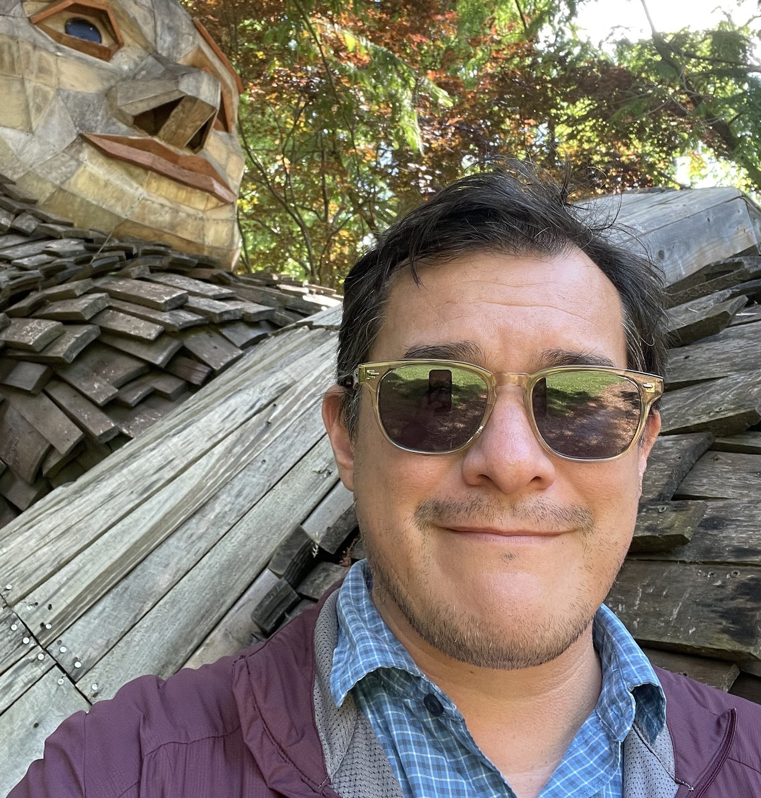

Luddy School of Informatics, Computing & Engineering · Indiana University
Director of Undergraduate Studies and Senior Lecturer, Department of Informatics, with two decades in technology education. From simulation and modeling research at Rensselaer Polytechnic Institute and into hands-on teaching across physical computing, 3D design, human-centered systems, and the cultural aspects of technology.

Teaching
Taught at Luddy over twelve years — six courses that move from foundations to frontier: systems thinking, hands-on electronics, ethical reasoning, educational design, advanced fabrication, and emergent AI practice.
Architecture for Learning
Simulations, tools, and games built to make ideas tangible. Each one runs locally in your browser — download it, open it, break it. They're designed as seeds: working code you can hand to an LLM and start tinkering from.